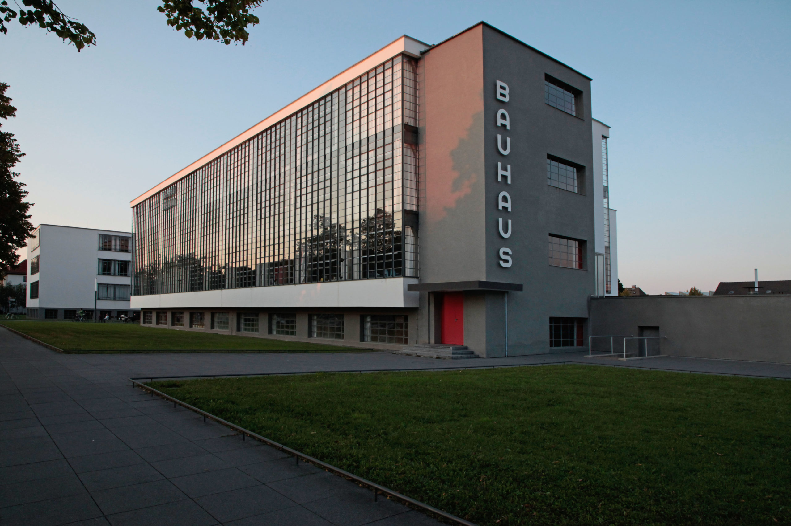

What is Bauhaus?

Bauhaus was a German school of art, architecture, and design founded in 1919 by Walter Gropius in Weimar, Germany. The school aimed to unite fine arts, crafts, and modern technology in order to create functional and practical designs for everyday life. Instead of focusing on heavy decoration, Bauhaus designers emphasized simplicity, geometric forms, and clean lines.
The Bauhaus movement had a strong influence on modern architecture, graphic design, and product design. Teachers and students experimented with new materials, industrial production methods, and modern visual language. Their ideas helped promote the concept that design should serve a clear purpose and that form should follow function.
Although the school was eventually closed in 1933 due to political pressure in Germany, the influence of Bauhaus continued to spread around the world. Many Bauhaus artists and architects moved to other countries and continued their work internationally, helping shape modern design and architecture throughout the twentieth century.
About Bauhaus
- Founded in 1919 by Walter Gropius
- Located in Weimar, Germany
- Emphasized functional and practical design
- Known for its minimalist aesthetic